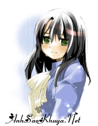

|
(ღ♥ღ♥Tình đơn phương ♥ღ ♥ღ) Cô-một cô bé hồn nhiên,vô tư với tâm hồn trong sáng,mạnh mẽ và sâu sắc. Anh-một chàng trai tài năng,giỏi giang và cũng rất chu đáo. Cô ấy-một cô gái xinh đẹp,hiện đại và cũng đã từng trải qua nhiều cuộc tình. Cả 3 người họ cùng học chung 1 lớp cấp 3.Anh luôn đứng đầu lớp và là mẫu người yêu lý tưởng của rất nhiều cô gái.Cô cũng ko là một ngoại lệ.Cô thích anh từ cách anh cười,cách anh nói chuyện và cả những trò đùa trong lớp của anh nữa.Cô ko xinh,học tuy không kém nhất lớp nhưng cũng chỉ là một học sinh bình thường không mấy nổi trội nhưng được cái cô hay cười và hồn nhiên lắm,như trẻ con ấy,cô hay nói và tám chuyện cùng với mấy thằng con trai ngồi cùng bàn bên dưới.Cô cũng thông minh-bạn bè nhận xét về cô thế,thầy giáo gọi cô là cô bé và cả anh cũng vậy nhưng cô luôn cho mình là kém cỏi,ko xứng để yêu anh bởi vậy mà cô chỉ luôn âm thầm quan sát anh từ xa, cô vui theo anh, buồn theo anh,cô chăm chú lắng nghe mỗi khi tụi con gái trong lớp bàn luận về anh,có khi còn nghe cả những cô gái thích anh nói về anh nói tốt có, nói xấu cũng có.Cô lặng lẽ giấu kĩ tình cảm của mình dành cho anh, hạn chế tiếp xúc với anh vì lo sợ bị anh phát hiện ra cô thích anh. Nhưng có 1 điều là anh cũng thích cô,nói đúng hơn là anh đã yêu cô,yêu cô nhiều lắm.Anh luôn thích những nét trong sáng của cô, anh thích cả sự vụng về đáng yêu của cô nữa.Giờ ra chơi anh hay thường đến bàn cuối chỗ mấy thằng con trai gần bàn của cô để nói chuyện nhưng thực ra là anh đang nhìn cô,muốn được nói chuyện với cô.Nhưng cô thì ngốc lắm,cô biết điều đó nhưng hình như cô ngại điều gì đó.Cô ngại khi tiếp xúc với anh,nói chuyện với anh cô ko bao giờ giám nhìn thẳng bởi lẽ cô sợ,sợ anh sẽ nhìn thấy đôi mắt cô đang che giấu 1 điều....1 điều là cô cũng yêu anh...  Trong lớp anh hay quay xuống bàn dưới để nhìn cô,thấy cô cười và anh lại làm cô e ngại,cô ko giám nhìn lên bảng vì có anh ở đó,anh đang nhìn cô và trái tim cô lại như xao động.Những khi anh ngồi gần,hai má cô đỏ ửng,cô ko giám quay sang nhìn anh mà chỉ cười theo anh khi nhìn những cử chỉ bối rối của anh khi được ngồi gần cô.Tình yêu trong anh và cô cứ thế lớn dần.Cô thì biết anh thích cô đấy nhưng anh thì ko thể biết bởi cô quá thông minh để che giấu được tình cảm ấy trong lòng. Cô luôn tự nhủ với lòng mình:"Mình ko thể yêu ấy được,có lẽ đó chỉ là cảm xúc thui.Phải!là sự rung động của trái tim.Ai chả vậy cả cô bạn thân của cô cũng thấy thế cơ mà?rùi khi vào đại học ấy sẽ quên mình thui,đừng quá ngốc để tin lời con trai được".Cô tự nhủ thế đấy nhưng thật sự tình cảm của cô ngày càng lớn dần lên trong cô mà cô cũng ko hề hay biết.Mỗi khi anh quay đi cô lại thở dài dõi theo anh,làm việc gì trong lớp cô cũng đều nghĩ là có anh đang nhìn cô,bởi thế mà cô luôn cẩn trọng trong lời ăn tiếng nói và cả trong quan hệ với bạn bè.Cô ko muốn anh nghĩ xấu về cô.Mà cô cũng có gì để mà nói xấu chứ,cô dễ thương lắm cơ mà chỉ có trái tim cô thì thật là ngây thơ và ngốc nghếch,cứ để anh âm thầm yêu mà anh ko thể nào hay biết nó đã mở cửa cho anh tự bao giờ. Thời gian cứ lặng lẽ trôi, thoáng chốc kì thi đại học đã cận kề đồng nghĩa với việc cô sẽ không còn được nhìn thấy anh mỗi ngày nữa, cô vừa phải học hành lo lắng cho tương lai của mình vừa vật lộn với những cảm xúc của mình dành cho anh nhưng cô vẫn kiềm chế,hạn chế tiếp xúc anh để rùi khi anh ko còn ở đó cô lại dõi theo anh,cô giận anh vì ko nói thẳng ra như bao người con trai khác.Sao anh ko viết thư cho cô?Hay là nói cho cô biết đi nhưng cô đâu có biết rằng cô đã bao giờ cho anh cơ hội để nói đâu?Cô luôn chánh mặt anh và ít tiếp xúc với anh cơ mà. Đã nhiều lúc anh cũng muốn nói với cô rằng yêu cô nhiều lắm nhưng hình như cô đang cố tình lảng chánh anh.Ko!cô ko muốn làm tổn thương ai hết,cô nhạy cảm lắm bởi thế mà cô biết cô bạn thân của cô cũng đang thích anh.Cô ko muốn anh yêu cô mà hãy yêu cô bạn ấy,cô ấy xinh đẹp,giỏi giang và hợp với anh hơn.Cô ko muốn nếu như yêu anh cô sẽ làm cho cô bạn của cô bị tổn thương,đau khổ.Cô nghĩ mình ko xứng với anh và cô đã tự bịa ra chuyện đã có người yêu cho cả lớp biết để rùi làm cho trái tim anh đau khổ.Cô đâu biết rằng mình làm vậy chỉ làm cho anh buồn chán và thất vọng,anh lại càng ko thể hiểu được cô đang nghĩ gì.Cô thật ngốc quá phải ko?Anh ko thể yêu cô bạn thân của cô được bởi lẽ anh đã yêu cô mất rùi,tình yêu đâu phải là sự nhường nhịn nhau đâu cô bé.Cô đã quá bao dung để rùi cứ để cho trái tim mình ngốc nghếch như thế,ngây thơ như thế và rùi.....để nó phải đau khổ,vỡ vụn như mảnh thủy tinh mỏng manh.. . Cô, anh và cô ấy cùng vào đại học.Anh đến nhà đưa cô đi chơi cô giáo.Ngồi sau xe anh mà cô có một cảm giác ấm áp chạy vào tim cô làm hai má cô nóng ran, đỏ ửng,cô lại bối rối trước anh và lại ko cho anh cơ hội..."Mình ko thể yêu ấy được.Ấy giỏi giang thế vào đại học rùi ấy sẽ tìm thấy người con gái khác giỏi giang và xinh đẹp hơn mình.Khi đó sẽ chỉ có mình là đau khổ thui"....Và vô hình chung cô lại để tuột mất anh...mà ko hề hay biết mình đã quá ngốc như thế nào..cô đã nghĩ quá xa và chưa thể hiểu nổi hết con người anh...anh yêu cô nhiều lắm và giờ thì anh đã ko thể biết cô đang nghĩ gì nữa...Anh học khoa kiểm toán của 1 trường lớn còn cô thì chỉ học kế toán ở 1 trường bình thường.Cô ấy cũng học kế toán nhưng trường cô ấy gần với trường anh hơn.Có lẽ vậy mà cô ấy đã có cơ hội tiếp xúc nhiều với anh hơn cô....Để rùi vào một ngày cuối năm trời ấm áp...cả lớp loan tin anh và cô ấy đã thành 1 đôi...trái tim cô bắt đầu thấy đau khổ...và cô đã khóc...lần đầu tiên cô đã khóc vì yêu. Cô ấy đã lấy mất anh đi.Phải!những trải nghiệm của những cuộc tình đã giúp cô ấy biết cách làm anh thay đổi,biết cách làm anh quên cô đi để rùi trái tim của cô mới bắt đầu rạn nứt và...tan vỡ.Cô giận anh tại sao ko yêu bạn thân của cô mà lại đi yêu cô ấy.Cô ấy ko giỏi giang,xinh đẹp bằng cô bạn thân của cô,cả cái tính nữa,cô ấy đã từng yêu rất nhiều người rùi cơ mà?Cô ko thể hiểu nổi điều gì đang xảy ra nhưng cô đâu có biết rằng anh yêu cô ấy cũng vì cô đã ko để cho anh cơ hội.Cô thật ngốc và còn trẻ con quá! Bước chân vào cổng trường đại học,cô tưởng chừng rùi mình sẽ quên anh nhưng rùi cô đã nhận ra tình cảm cô dành cho anh không phải là thích mà là yêu. Dường như cô đã bị biến thành đám bọt biển như trong truyện nàng tiên cá trôi dạt và vỡ tan theo từng con sóng chỉ có thể nhìn anh đang dần dần xa mình, xa mãi mãi....Cô kiếm thật nhiều việc để làm, cô cố gắng làm mình bận rộn, bận rộn để không còn thời gian nghĩ tới anh, bận rộn để không còn thời gian buồn thương đau khổ.Cô bạn thân của cô giờ cũng đã có người yêu rùi chỉ mình cô là còn cô đơn thui.Cô cũng đã từng đi gặp nhiều người,muốn yêu 1 ai đó để quên anh đi nhưng hình như càng làm vậy cô càng thấy yêu anh nhiều hơn.Cô đã khóc,khóc rất nhiều....Ngày đi ra chỗ bạn thân của cô chơi,cô gặp lại anh và cô ấy...Nhìn hai người thân mật với nhau mà trái tim vốn lâu nay được cô băng bó cẩn thận đã vỡ thành từng mảnh mà cô không có cách nào ngăn lại được.Cô nhìn thấy những bức ảnh của 2 người chụp với nhau mà lòng cô đau khổ tới quoằn quoại nhưng vẫn phải cười cười nói nói thật tự nhiên,cô tự nhủ: “Không thể để lộ ra nếu không mọi thứ sẽ mất hết, tình bạn bấy lâu sẽ tan theo mây khói”.
Cô lại quay về với cuộc sống bận rộn để khỏa lấp nỗi buồn, cô đơn, đau khổ của một trái tim tan vỡ. Cô ít nói hơn, đôi mắt trong sáng giờ đã phảng phất nét buồn. Cũng khá lâu rồi cô không liên lạc với anh dù rất muốn. Cô chỉ nghe thông tin về anh qua những người bạn cũ dù cho trong những tin tức về anh giờ gắn với cô ấy nhưng không sao chỉ cần cô biết anh vẫn đang hạnh phúc vậy là đủ rồi. Có những lúc cô chợt nghĩ giá mà họ chia tay có thể cô sẽ có cơ hội những lúc ấy cô thấy bản thân mình thật xấu xa. Rồi thời gian cũng qua đi không đủ lâu để cô quên anh nhưng cũng đủ để lòng cô bớt đau. Cô sẽ phải cố quên anh,phải!dằn lòng để mà quên,cô thấy mình thật đau khổ,giờ mới nhận ra là cô đã yêu anh thật nhiều để rùi khi anh đã xa cô,xa mãi mãi....Cô thấy mình chới với,bạn bè xung quanh cô đã khuyên bảo, động viên cô rất nhiều và đến giờ cô ko biết là mình có nên nói ra cho anh biết ko nữa hay là cứ giữ nó ở trong lòng như thế này..Cô đã đi hỏi rất nhiều người,người thì bảo cô hãy quên anh đi,người thì bảo cô hãy đối diện với sự thật nhưng cô đâu đủ dũng cảm để đối mặt với nó chứ?Nếu như anh còn tình cảm với cô thì cô cũng ko muốn anh phải phân vân và làm cho cô ấy đau khổ...cô vẫn còn bao dung lắm nhưng cô đang phải chịu..chịu sự khổ đau dằn vặt con tim mình...cô chỉ biết khóc và tìm mọi cách để cố gắng quên anh,ko nghĩ về anh nữa...Có những lúc cô lại ao ước và hi vọng...hi vọng anh còn yêu cô và nếu là như thế cô sẽ nói cho anh biết tình cảm của cô nhưng sự thật thì cô ko thể biết được anh còn yêu cô nữa hay ko và cô đã nhận ra đó chỉ là hi vọng nhỏ nhoi mà thui....Cô thật là ngốc nghếch,ngốc nghếch khi đã yêu anh như thế này..nhưng cô chẳng biết phải làm sao cả,đúng là cô thích anh đấy,con tim cô bảo vậy đấy, giờ có bắt nó ngừng đập trong nó vẫn chứa đầy hình ảnh của anh, nhưng tình yêu thầm lặng của cô có gây tổn hại cho ai đâu nó chỉ có thể làm một mình cô đau khổ thôi. Thế đấy,giờ cô đã trở thành một cô bé ngốc nghếch,ôm ấp 1 mối tình đơn phương để rồi nhận lại chỉ là sự cô đơn và đau khổ.Cô đang tự làm khổ bản thân mình....nhưng cô sẽ ko bao giờ hối hận khi đã yêu anh như thế,dù giờ có cho chọn lựa lại cô sẽ vẫn yêu anh,cô sẽ ko bao giờ quên anh đâu nhưng cô sẽ hi vọng rồi sẽ có 1 người khác giống anh đến với cô và cô sẽ ko bao giờ để mất người đó như mất anh nữa..tình yêu đâu phải là sự nhường nhịn,đâu phải là sự rụt rè,ái ngại..ko cho nhau cơ hội..để rồi phải đau khổ như thế này đâu.Có lẽ cô đã nhận ra 1 điều.."Trong tình yêu,mình đã ko còn trẻ con nữa".. Nguồn: Bản quyền của ASK (cobe0609) || Tham gia bình luận TẠI ĐÂY ||
Bạn vô tình đọc ở đâu đó một câu chuyện tình cảm động hoặc một câu chuyện do chính bạn viết ra. Hãy đến với chúng tôi để cùng nhau chia sẻ: wWw.anhsaokhuya.net
Chung tay vì một thế giới online lành mạnh !
|